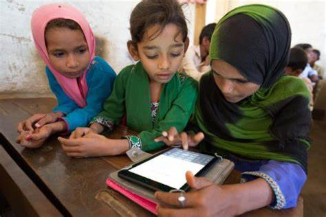

Is there a Problem in Tech? What minority Tech Hopefuls should know?
In the context of Nepal, the tech industry, like many other industries, has historically been dominated by members of certain castes. This can create significant challenges for minority tech hopefuls, particularly those from lower-caste backgrounds. One of the main issues that minority tech hopefuls in Nepal may face is discrimination in hiring and promotion decisions. This discrimination may be overt or subtle, but it can impact the opportunities available to minority tech professionals. It's important for minority tech hopefuls to be aware of these biases and to seek out companies and organizations that prioritize diversity and inclusion. Another challenge that minority tech hopefuls in Nepal may face is limited access to resources and education. This can be particularly true for individuals from lower-caste backgrounds who may have limited access to quality education and training opportunities. It's essential for minority tech hopefuls to seek out resources and support networks that can help them gain the skills and knowledge needed to succeed in the tech industry. Finally, networking is critical in the tech industry, and this can be particularly challenging for minority tech hopefuls in Nepal. Networking often happens informally and can be based on shared experiences and cultural backgrounds. Minority tech hopefuls may face barriers in building these types of connections, but it's important to remain persistent and seek out opportunities to connect with other professionals in the industry. Overall, while there are certainly challenges and issues that minority tech hopefuls in Nepal may face, there are also many opportunities to succeed. By being aware of these challenges and taking steps to overcome them, minority tech hopefuls can increase their chances of success in this exciting and dynamic industry.
What is causing the lack of Diversity in Tech?
In the context of Nepal, the lack of diversity in the tech industry can be attributed to several factors: Social norms and caste-based discrimination: Nepal has a hierarchical caste system that has historically excluded individuals from lower castes from accessing education and job opportunities. This has led to a lack of diversity in the tech industry, with individuals from higher castes dominating the sector. Limited access to education and training: Many individuals from marginalized communities in Nepal face barriers to accessing quality education and training opportunities. This can limit their ability to gain the skills and knowledge needed to succeed in the tech industry. Gender bias: Like many other industries, the tech industry in Nepal is male-dominated, with few women in leadership positions. This can create a culture that is unwelcoming to women and can limit their opportunities for career advancement. Limited job opportunities outside of the capital: The majority of tech jobs in Nepal are located in Kathmandu, which can create barriers for individuals from other parts of the country to access job opportunities in the sector. Lack of diversity initiatives: Finally, there is a lack of diversity initiatives in the tech industry in Nepal, with few companies and organizations actively working to increase diversity and inclusion in their workplaces. Overall, addressing the lack of diversity in the tech industry in Nepal will require a concerted effort from all stakeholders, including government, industry, and civil society. This will involve addressing systemic discrimination, improving access to education and training opportunities, promoting gender equity, and implementing diversity initiatives in the workplace.
Steps for minorities in tech

Pursue education and training: Access to education and training is key to success in the tech industry. Minorities in tech should seek out opportunities to gain the skills and knowledge needed to succeed in the industry, whether through formal education programs, online courses, or self-directed learning.
Build a professional network: Networking is critical in the tech industry, and minorities in tech should actively seek out opportunities to connect with other professionals in the industry. This can involve attending industry events, joining online communities and forums, or participating in mentorship programs.
Seek out diversity initiatives: Some companies and organizations in Nepal are actively working to increase diversity and inclusion in their workplaces. Minorities in tech should seek out these organizations and opportunities to work with them, whether through internships, volunteer work, or full-time employment.
Advocate for change: Minorities in tech can play an important role in advocating for greater diversity and inclusion in the industry. This can involve speaking out against discrimination and bias, promoting the value of diversity in the workplace, and pushing for policies and practices that promote equity and inclusion.
Be resilient: Finally, minorities in tech should be resilient in the face of obstacles and challenges. The tech industry can be competitive and demanding, but with hard work, perseverance, and a commitment to learning and growth, minorities in tech can succeed and thrive in this exciting and dynamic field.
Empowering Girls from Minority Communities in Nepal: Steps to Succeed in the Tech Industry

"Promoting LGBTQ+ Involvement in Nepal's Technology Sector: Current Status and Strategies for Overcoming Challenges"
The LGBTQ+ community in Nepal has made significant strides in recent years in terms of their involvement in the technology sector. However, discrimination and social stigma against LGBTQ+ individuals still exist in Nepal, and there are several challenges that need to be overcome. Status: In 2015, Nepal became the first country in South Asia to legalize same-sex marriage. In 2019, the country issued its first transgender passport, allowing transgender individuals to choose a gender marker other than "male" or "female". Several LGBTQ+ organizations have been established in Nepal, including the Blue Diamond Society, which advocates for the rights of sexual and gender minorities. Overcoming challenges: Discrimination and social stigma against LGBTQ+ individuals still exist in Nepal, and many individuals still face harassment and violence. It is essential to continue raising awareness and educating the public about the rights of LGBTQ+ individuals. More initiatives need to be taken to increase the representation of LGBTQ+ individuals in the technology sector. This can include creating mentorship programs and providing scholarships to LGBTQ+ students interested in pursuing careers in technology. Policies need to be put in place to protect LGBTQ+ individuals from discrimination in the workplace. This can include creating workplace diversity and inclusion policies and training programs for employers and employees. In conclusion, while progress has been made, there is still much work to be done to fully integrate LGBTQ+ individuals into the technology sector in Nepal. Continued advocacy, education, and policy initiatives are essential to creating a more inclusive and welcoming environment for LGBTQ+ individuals.
Click on me to Read more| Group | Number of individuals employed in the technology sector |
|---|---|
| Women | 1500 |
| Man | 9500 |
| LGBTQ+ | 100 | Marginalized people | 200 |